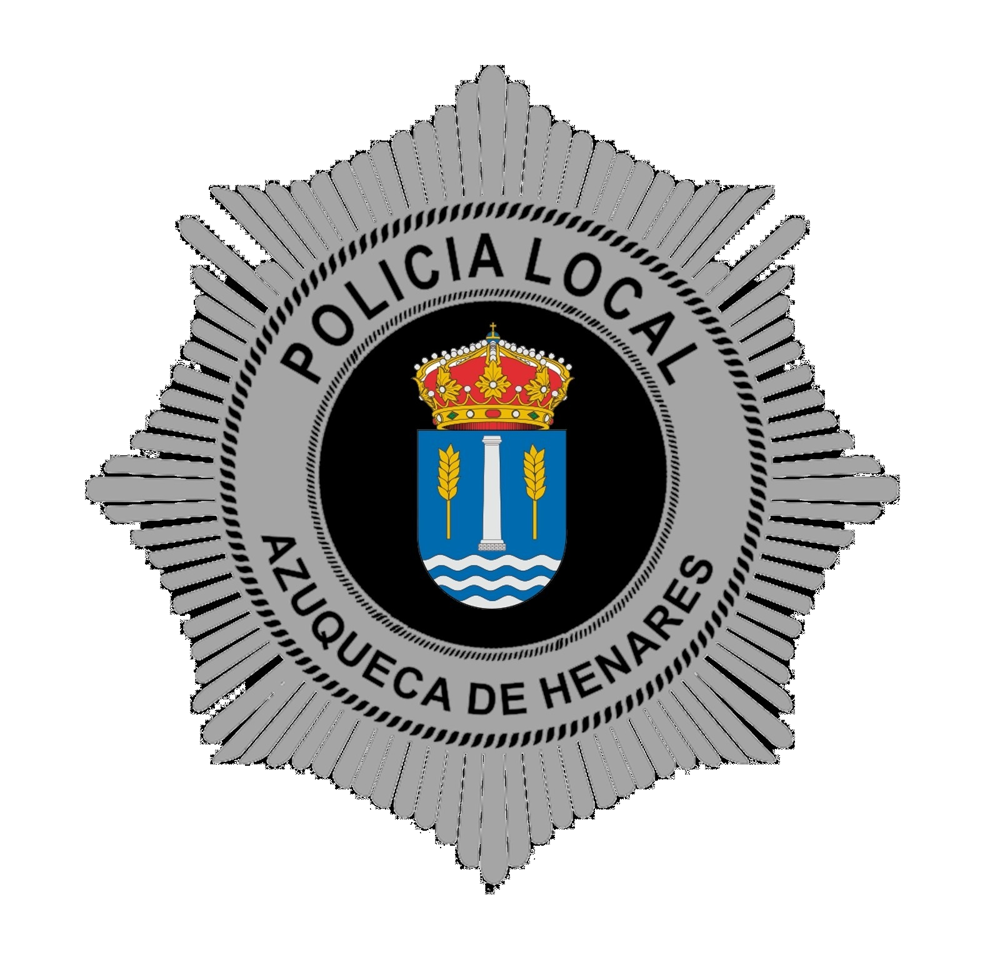
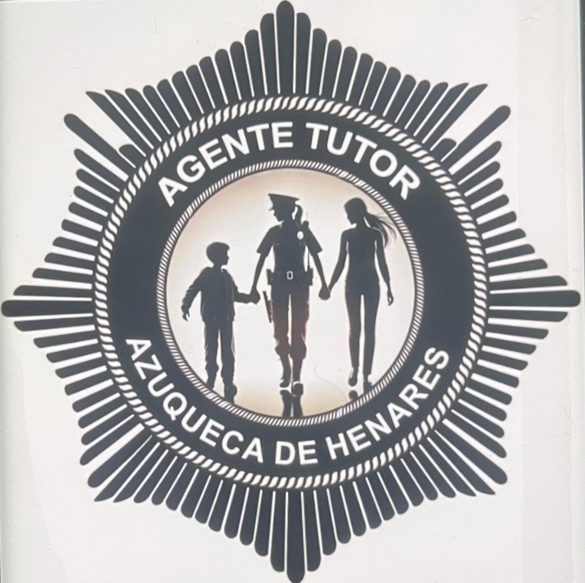
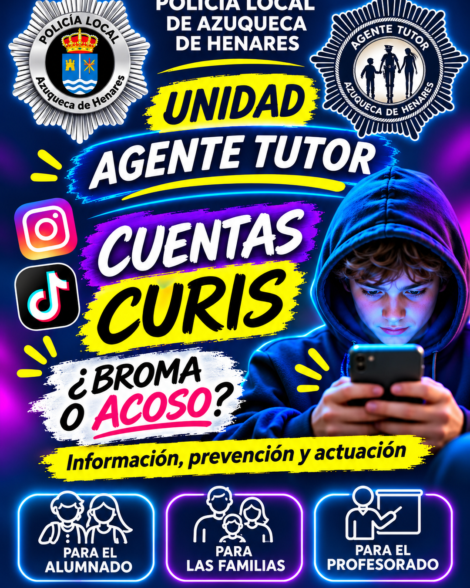

Publicaciones
Fotos, vídeos, capturas, memes o comentarios sobre alumnado, profesorado o el centro.


Una publicación, una foto o un comentario pueden parecer una broma. Pero si sirven para señalar, ridiculizar, humillar o perseguir a alguien, pueden causar un daño real.

Son perfiles o cuentas en redes sociales que publican contenido relacionado con un centro educativo o su comunidad: memes, fotografías, vídeos, comentarios, rumores o confesiones. Algunas se presentan como humor o entretenimiento, pero pueden utilizarse para exponer, ridiculizar o acosar a otras personas.
Fotos, vídeos, capturas, memes o comentarios sobre alumnado, profesorado o el centro.
En ocasiones no se identifica quién administra la cuenta, quién envía el contenido o quién lo difunde.
Compartir, comentar o reenviar puede multiplicar el alcance y prolongar el daño.
Cuando el contenido humilla, intimida, señala o perjudica a una persona, especialmente si se repite o se difunde sin su consentimiento.
Facilita que el menor cuente lo ocurrido. Evita culpabilizarle por haber participado en una red o por no haberlo contado antes.
Guarda evidencias y contacta con el centro educativo. Si hay amenazas, difusión íntima o coacciones, busca asesoramiento especializado y ayuda policial.
Revisa con el menor las opciones de privacidad, bloqueo y denuncia. No contribuyas a difundir el contenido.
Escuchar a las personas afectadas, evitar minimizar los hechos y valorar el impacto en la convivencia.
Aplicar los protocolos y procedimientos del centro, informar a las familias cuando corresponda y coordinar la respuesta.
Trabajar ciudadanía digital, respeto, privacidad, consentimiento y responsabilidad al publicar y compartir.
Consulta los 16 apartados de la guía de la Unidad Agente Tutor: marco jurídico, responsabilidades según la edad, conservación de pruebas, actuación de familias y centros y recursos de ayuda.
Abrir la guía en esta web Descargar documento WordEstas son las diapositivas de la campaña. Pulsa sobre cualquiera para ampliarla.
No toda publicación constituye por sí sola una infracción o un delito. La valoración depende del contenido, las circunstancias, la edad de las personas implicadas, la reiteración y el daño causado. Ante dudas, solicita orientación profesional.